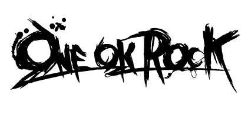
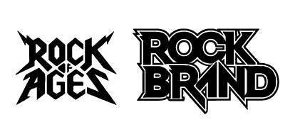
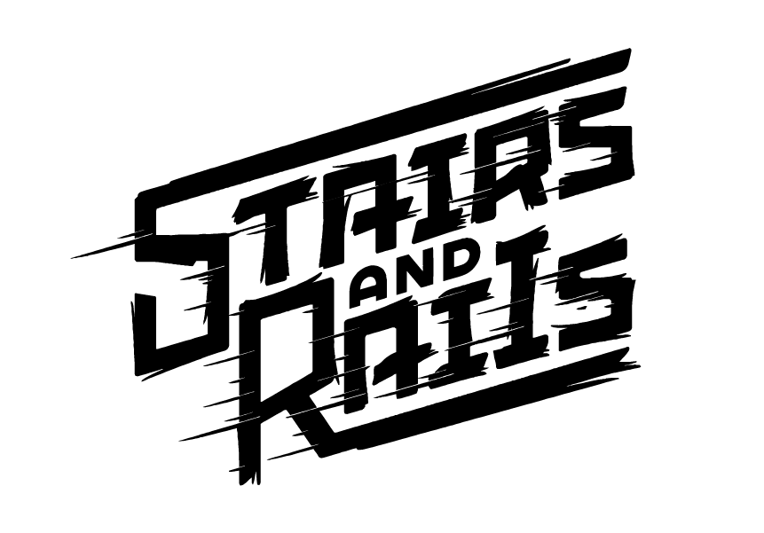
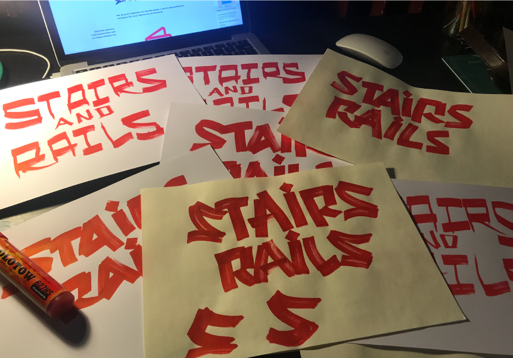
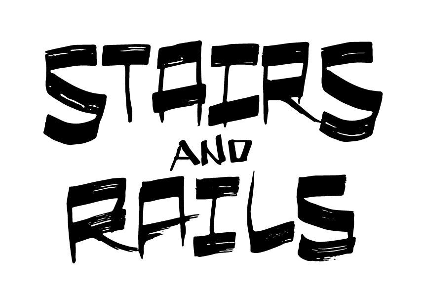
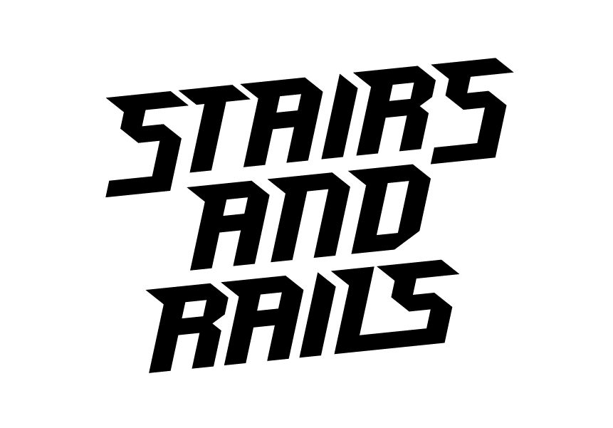

Написал мне Дима
Хилимончик
– он тоже очень крутой бизнесмен, по-этому говорит: "Здарова, Сувлак (это в переводе с
языка Сочи – "Ответственный и сексуальный"), помню, что ты
непревзойденный рокер, нужен логотип. О, ты подкачался? Ходишь в зал? Прямо как Ченнинг Татум и
Раян Гослинг!". Ну я не стал объяснять, что от рока ничего не осталось, кроме футболки
Greatfull Dead, вытирать высыпающийся песок. Говорю ему: "Да, Димарихуанчик, ты по адресу, йоу!
Ничего не говори, я все понял. В зал не хожу, просто здоровый образ жизни, аэробика, все дела."
Приступил к делу. Посмотрел рынок и референсы.
Референсы, которые приглянулись чувакам. Чего
таить, у
Red Dead
Redemption действительно крутой лого.


Первые скетчи были похожи на то, что остаётся после того, как дети давят целую банку Колорадских
жуков. В итоге я за вечер выплюнул вариант, который первые пару
часов мне нравился. Но потом он начал превращаться во что-то конечное и не привлекательное. Вот
вам совет:
Если чувствуешь, что проект перестал катиться как по маслу,
вернись на пару шагов назад, потом будет проще
Но я возвращаться не стал и получилось что-то такое.
Первый вариант. Перестал мне нравится через секуду
после отправки. Урод.

Дальше несколько дней полного болота. Этот сайт занимает очень много времени. Некогда рисовать.
Взял волю в кулак и приступил ко второй попытке. Когда слышу от художиников, или дизайнеров, или
от кого угодно, что-то про вдохновение, хочется
блевануть. Чувак, сядь и делай, мать твою! Пока ты дергаешь себя за стручёк, ничего не
случится. Труд и неудачные эксперименты – вот и
весь секрет вдохновения.
Скетчи. Настроения действительно не было и скептически к ним
отнесся

Выбрал лучшее, немного похимичил в фотошопе и иллюстраторе. Посидел потупил, и наконец
подготовил два варианта.
Скетчи. Итого три варианта. Все говно.


Отправил димону. Типа потянул время в надежде найти гениальную идею, Курта Кобейна логотипов.
Че-то не прёт как-то. Ладно, бывает.
Стал смотреть в монитор. На столе валялся винт. И тут херакс! Бум, рокенролл! Минута, накидал
скетч
на основе конструктивистских
палочных шрифтов, добавил ступени, рейли и викты, добавил динамику и вот он!
Вариант, которым я доволен
Конечно, еще есть, над чем работать. Не сбалансирован, много залипов, но черт. Он мне нравится.
Димон молчит, может на самом деле – это шлак. Увидим.